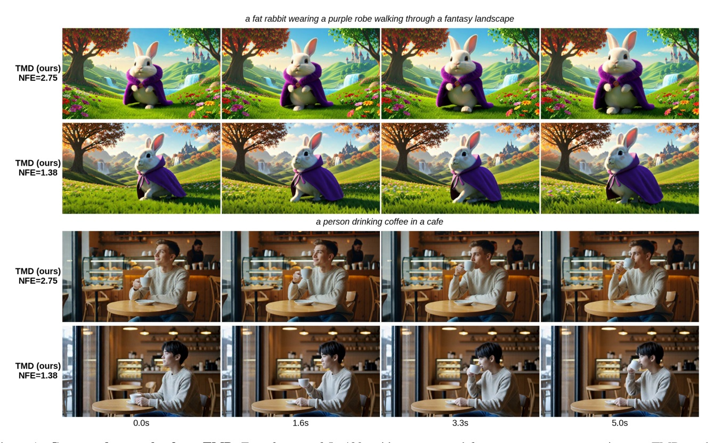
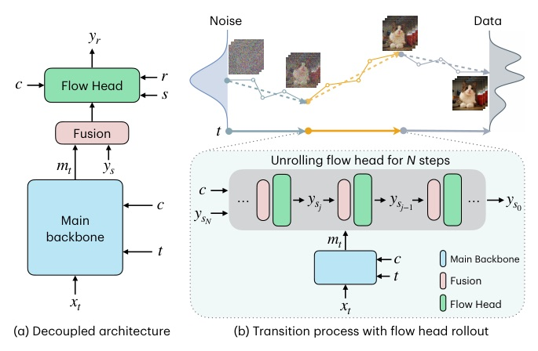
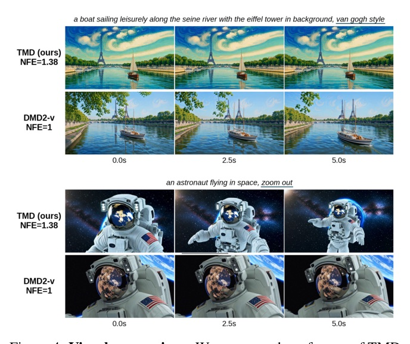
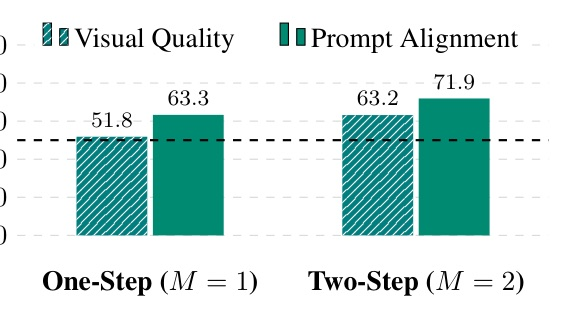
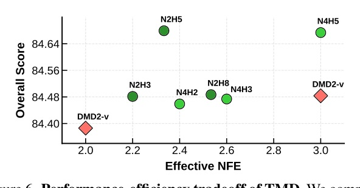
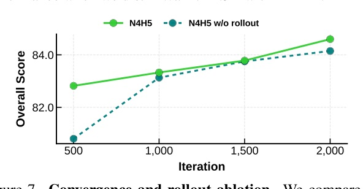

把長 denoising trajectory 拆成少數外層 transition；每次 backbone 取一次語義，flow head 再做低成本內層細化。

TMD 的關鍵不是「少跑幾步」；而是把昂貴語義 backbone 與可重複執行的 refinement 分開。

| Model | NFE | Overall | Quality | Semantic |
|---|---|---|---|---|
| DMD2-v | 2.00 | 84.39 | 85.65 | 79.32 |
| rCM | 4.00 | 84.43 | 85.38 | 80.63 |
| TMD-N2H5 | 2.33 | 84.68 | 85.71 | 80.55 |
| TMD-N2H5 | 1.17 | 83.80 | 85.07 | 78.69 |
| Model | NFE | Overall | Quality | Semantic |
|---|---|---|---|---|
| rCM | 1.00 | 83.02 | 83.57 | 80.81 |
| DMD2-v | 1.00 | 83.69 | 84.46 | 80.61 |
| TMD-N4H5 | 1.38 | 84.24 | 84.89 | 81.65 |


| Head | Overall | Quality | Semantic |
|---|---|---|---|
| Conv3D | 83.24 | 84.28 | 79.10 |
| Conv1D-2D | 82.32 | 83.54 | 77.44 |
| Attention | 82.36 | 83.32 | 78.51 |
| w/o GAN | 81.63 | 82.70 | 77.35 |
真正的加速單位不必是「完整 denoising step」。
只要語義已取出，細節 refinement 可以有自己的小循環。


| Setting | Pretrain | Overall | Quality | Semantic |
|---|---|---|---|---|
| N2H5 | TM | 84.61 | 85.64 | 80.46 |
| N2H5 | TM-MF | 84.68 | 85.71 | 80.55 |
| N4H5 | TM | 84.29 | 85.45 | 79.68 |
| N4H5 | TM-MF | 84.67 | 85.72 | 80.47 |
This hierarchical decomposition allows the student to share representations from the main backbone with the flow head.
這個層級式拆分讓 student 可把 main backbone 的表徵共享給 flow head。§1 p.2
Distillation with flow head rollout effectively avoids the mismatch between training and inference.
以 flow-head rollout 蒸餾能有效避開訓練與推論不匹配。§3.2 p.5
TMD can provide consistent performance gains for increasing NFE.
隨著 effective NFE 增加，TMD 能提供一致的效能提升。§4.3 Fig.6 p.7
Attention、kernel、hardware：下一份看哪些成本真的卡住。